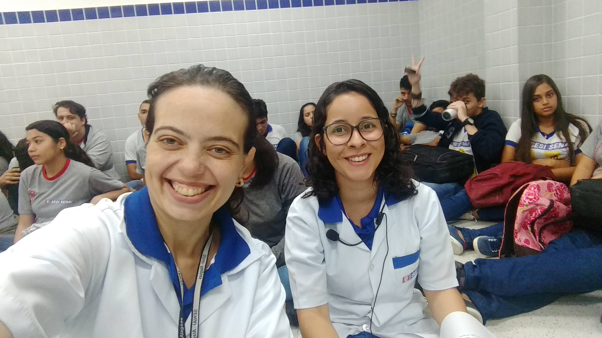

Bem, agora escreverei um pouco sobre... Certo, primeiro começarei falando sobre o que estsudamos no curso até agora, no curso existem unidades, cada unidade um conteúdo diferente e até agora nós estudamos: Informática básica, Lógica da programação, EMT-Educação para o Mundo Do Trabalho, Fundamentos de web Disign, Fundamentos da Tecnologia da Informação, Comunicação oral e Escrita, Estruturação de Interface Web, projeto de Interface web, e todas essas foram as unidades vistas até agora.
Porém ao longo dessas unidades nossa turma foi perdendo membros que de alguma forma até hoje fazem falta, Tem Exceções... Atualmente a turma está muita unida, as pessoas que ainda residem lá gostam muito do curso e acreditamos que mais ninguém irá desistir do curso. Falando agora um pouco sobre a minha visão sobre a turma, eu gosto muito das pessoas que fazem a turma ser como é, e não só os alunos, as professoras também, elas são outro nível se comparar com outros professores de informática que eu já tive. E esse curso vai servir MUITO para o meu futuro.

“Tente uma, duas, três vezes e se possível tente a quarta, a quinta e quantas vezes for necessário. Só não desista nas primeiras tentativas, a persistência é amiga da conquista. Se você quer chegar a onde a maioria não chega, faça o que a maioria não faz.”
- Bill Gates